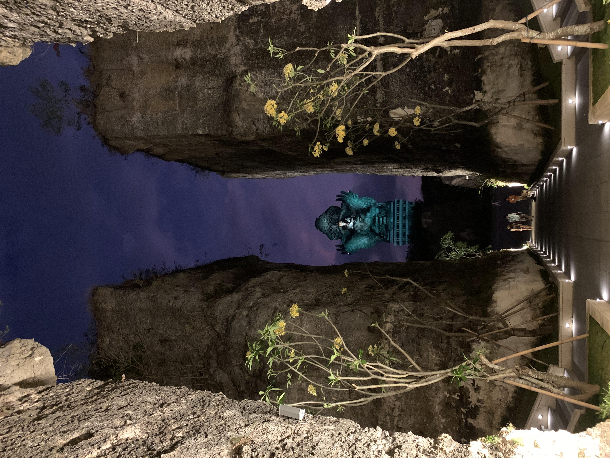

Paket Bali

Melalui layanan ini, SP Tourindo Trans bukan hanya penyedia transportasi, tetapi juga mitra dalam pendidikan yang aktif membantu siswa menjelajahi dan memahami dunia di sekitar mereka. Armada jenis bus untuk lintas propinsi bali antara lain:
- Super Double Decker
- Medium
Adapun fasilitas selama perjalanan bersama bus-bus lintas propinsi kami, antara lain:
- Full AC
- LCD TV
- Reclining Seat dengan sandaran kaki
- Dispenser Air Panas dan Normal
- Lampu Baca
- Selat pemisah driver dan penumpang
- Charging HP Station
- Bagasi Kabin
- Toilet
- Super Double Decker dengan jumlah Seat 50, dan Medium Bus dengan jumlah seat 35
Price Bus
- Super Double Decker dengan jumlah Seat 50 = Rp.8.000.000
- Medium dengan jumlah Seat 35 = Rp.5.000.000
Paket Malang

Melalui layanan ini, SP Tourindo Trans bukan hanya penyedia transportasi, tetapi juga mitra dalam pendidikan yang aktif membantu siswa menjelajahi dan memahami dunia di sekitar mereka. Armada jenis bus untuk lintas propinsi malang antara lain:
- Super Double Decker
- Medium
Adapun fasilitas selama perjalanan bersama bus-bus lintas propinsi kami, antara lain:
- Full AC
- LCD TV
- Reclining Seat dengan sandaran kaki
- Dispenser Air Panas dan Normal
- Lampu Baca
- Selat pemisah driver dan penumpang
- Charging HP Station
- Bagasi Kabin
- Toilet
- Super Double Decker dengan jumlah Seat 50, dan Medium Bus dengan jumlah seat 35
Price Bus
- Super Double Decker dengan jumlah Seat 50 = Rp.6.000.000
- Medium dengan jumlah Seat 35 = Rp.3.500.000